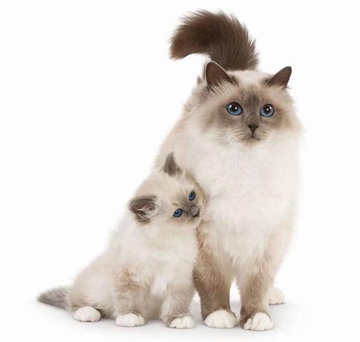

According to legend, the first Burmese cat received its color and sky-blue eyes asa gift from the goddess when it protected its owner and the temple from robbers.
The Burmese are deeply devoted to the people. Thanks to their good-natured disposition, these cats get along well with other pets and love to have many playmates.
These cats will be no less happy in a family where there are no other animals.